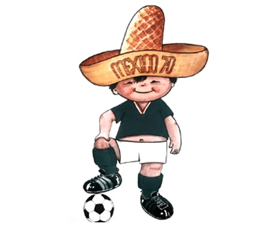

Como surgiu a "Copa Do Mundo"?
A Copa Do Mundo organizada pela Fifa e, em sua estrutura atual, é composto por 32 seleções. Os jogos acontecem em uma nação-sede determinada por meio de eleição estruturada pela própria Fifa. A Copa do Mundo aconteceu pela primeira vez em 1930, no Uruguai. As edições de 1942 e 1946 foram canceladas pela Fifa por conta da Segunda Guerra Mundial. Com o avançar dos anos, a Copa do Mundo transformou-se em uma competição de importância mundial e de grande audiência.
A importância desse evento é claramente representada com base em dados disponibilizados pela própria Fifa. Eles mostram que a Copa de 2014, realizada no Brasil, e a de 2010, na África do Sul, contaram com cerca de 3,2 bilhões de espectadores. No caso da Copa de 2014, o jogo final, disputado entre Alemanha e Argentina, foi assistido por 1 bilhão de pessoas.
A primeira Copa Do Mundo de 1930
A primeira Copa do Mundo aconteceu em 1930, no Uruguai, e foi resultado de um esforço de anos realizado por pessoas relacionadas à Fifa, com destaque para o papel de Jules Rimet. A realização de uma competição de futebol internacional era algo discutido internamente desde que a Federação foi fundada, em 1904.

As condições políticas para que isso acontecesse só existiram a partir da década de 1920. Atribui-se isso, em grande parte, ao esforço de
A decisão sobre qual seria a sede da primeira Copa do Mundo foi outro assunto que demandou tempo para que fosse definido. A decisão só saiu em 1929, durante uma reunião em Barcelona, com a escolha do Uruguai para receber os jogos. A candidatura uruguaia derrotou uma série de outras candidaturas europeias. A escolha do Uruguai como sede ocorreu pelos seguintes fatores. Tratava-se de uma nação influente desportivamente falando, pois representava a maior potência do futebol à época, quando já era bicampeão olímpico. Financeiramente, a candidatura uruguaia comprometeu-se a pagar todas as despesas das nações participantes.
O Crescimetendo da Copa
À medida que o futebol se popularizou, a Copa foi se transformando em um evento de grandes proporções que mobiliza o mundo durante trinta dias. A importância da competição pode ser atualmente em diversos casos de comemorações generalizadas, sobretudo em nações de pouca tradição, como foi o caso do Panamá, por exemplo.
As primeiras Copas do Mundo (de 1930 a 1978) contaram com, no máximo, 16 participantes. A partir da edição de 1982, a competição passou a receber 24 seleções, formato que se estendeu até 1994. Em 1998, criou-se o formato atual, que conta com 32 seleções e está previsto para permanecer somente até 2022. A partir de 2026, a Copa do Mundo contará com 48 seleções.
Como surgiu os mascotes?
O primeiro mascote de uma edição da Copa do Mundo surgiu em 1966, no Mundial que foi sediada na Inglaterra. O Leão Willie, que é um animal símbolo no Reino Unido, vestia uma blusa com a bandeira do país. Em 1970, o mascote do torneio de seleções realizado no México chamava Juanito, ele vestia um sombrero, tradicional no México e o uniforme da seleção mexicana.
Conheça mais sobre o mascote da Copa de 2022
O mascote da Copa do Mundo FIFA 2022 foi apresentado durante o sorteio dos grupos, no início do ano, e foi batizado La'eeb – que, de acordo com a organização, significa “jogador super-habilidoso” em árabe. Com a forma inspirada no Keffiyeh, lenço para cabeça característico do Catar, a animação mantém a tradição de incluir elementos regionais dos países-sede nos personagens.
No retrospecto, a França ganhou a última edição da competição, em 2018, quando venceu a Croácia na Copa do Mundo da Rússia. Já a Alemanha teve a vitória mais recente em 2014, enquanto a Itália, que levou a melhor pela última vez em 2006, não disputa a Copa do Mundo há oito anos.
Para saber mais e ter conhecimento sobre as principais notícias sobre a copa do mundo, bastar acessar
Então é isso! Espero que você tenha gostado do nosso artigo com essas Curiosidades sobre a Copa Do mundo e seus mascotes e acontecimentos.